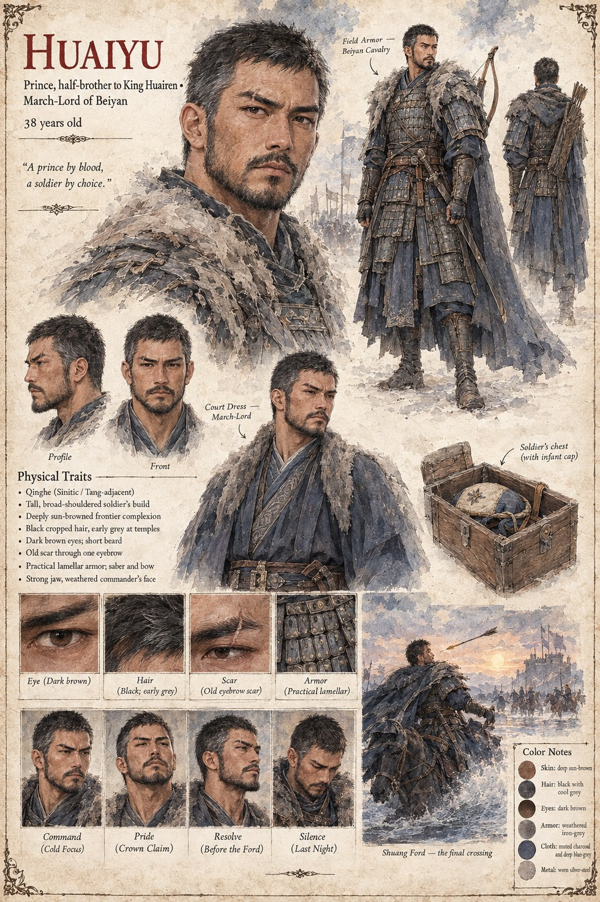

Huaiyu
Prince, half-brother to King Huairen · March-Lord of Beiyan · 38 years old
Half-brother to King Huairen and March-Lord of the frontier at Beiyan — a prince by blood who built his whole adult identity on being a soldier by choice instead. His affair with Queen Meilan produces the one child neither of them can ever publicly claim: Prince Jiyun, sealed to the throne as Huairen's own son by Warden Peizhi's Reckoning before Huaiyu is ever told the boy exists as anything other than the King's heir. He keeps an infant's cap in his own campaign chest for the rest of his life, and tells no one what it means.
When the throne he never contested becomes something worth fighting over anyway, he leads the faction that will not accept Chancellor Jian's account of the old King's death, and dies at the second autumn's crossing of the Shuang ford, shot by a seventeen-year-old soldier of the Queen's own garrison who believes, to his own dying day, that he has struck down a traitor rather than the father of the child that garrison exists to protect.
“A prince by blood, a soldier by choice.”
Appears in The Listening Water